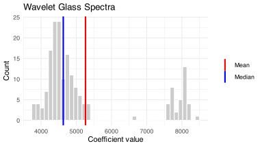
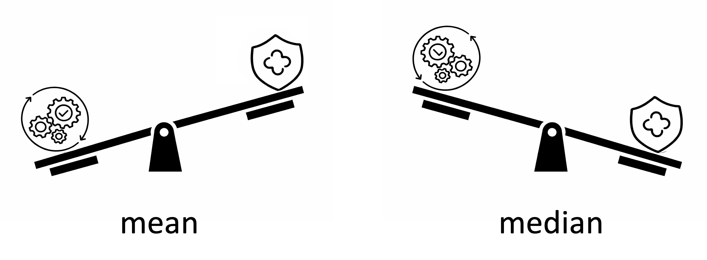
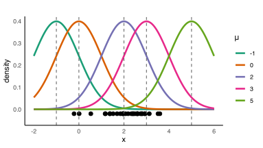
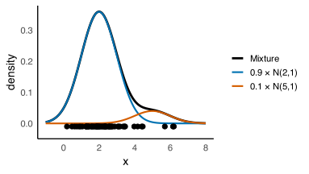
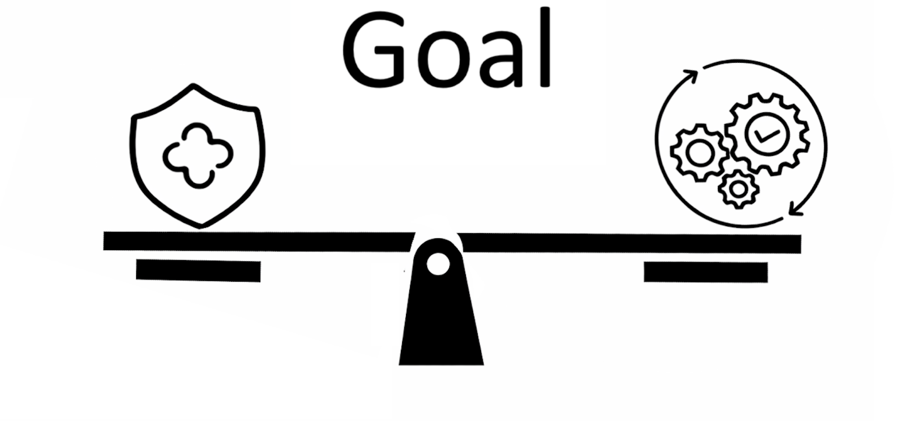
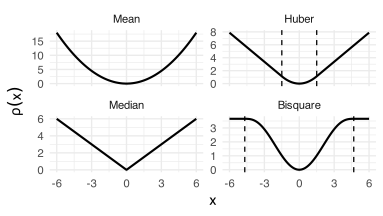

Outliers II
DSCI 200
Katie Burak, Gabriela V. Cohen Freue
Last modified – 02 March 2026
\[
\DeclareMathOperator*{\argmin}{argmin}
\DeclareMathOperator*{\argmax}{argmax}
\DeclareMathOperator*{\minimize}{minimize}
\DeclareMathOperator*{\maximize}{maximize}
\DeclareMathOperator*{\find}{find}
\DeclareMathOperator{\st}{subject\,\,to}
\newcommand{\E}{E}
\newcommand{\Expect}[1]{\E\left[ #1 \right]}
\newcommand{\Var}[1]{\mathrm{Var}\left[ #1 \right]}
\newcommand{\Cov}[2]{\mathrm{Cov}\left[#1,\ #2\right]}
\newcommand{\given}{\ \vert\ }
\newcommand{\X}{\mathbf{X}}
\newcommand{\x}{\mathbf{x}}
\newcommand{\y}{\mathbf{y}}
\newcommand{\P}{\mathcal{P}}
\newcommand{\R}{\mathbb{R}}
\newcommand{\norm}[1]{\left\lVert #1 \right\rVert}
\newcommand{\snorm}[1]{\lVert #1 \rVert}
\newcommand{\tr}[1]{\mbox{tr}(#1)}
\newcommand{\brt}{\widehat{\beta}^R_{s}}
\newcommand{\brl}{\widehat{\beta}^R_{\lambda}}
\newcommand{\bls}{\widehat{\beta}_{ols}}
\newcommand{\blt}{\widehat{\beta}^L_{s}}
\newcommand{\bll}{\widehat{\beta}^L_{\lambda}}
\newcommand{\U}{\mathbf{U}}
\newcommand{\D}{\mathbf{D}}
\newcommand{\V}{\mathbf{V}}
\]
Attribution
In memory of my mentor and friend
Professor Ruben Zamar (1949-2023)
who contributed greatly to Robust Statistics and beyond …
Univariate estimators
Data: n = 180 archeological glass spectra with d = 750 wavelengths (Detecting Deviating Data Cells, Rousseeuw & Van Den Bossche, Technometrics 2018)
Looking at the values of the wavelength V169:

Robustness vs Efficiency

Can we achieve robustness without loss of efficiency?
Which distribution generated the data?

Suppose that we know which distribution generated the data but we don’t know it’s center, how can we estimated?
The MLE
\[
\hat{\mu}_{\text{MLE}}
=
\arg\min_{\mu}
\sum_{i=1}^n
\!(x_i-\mu)^2
\]
\(\arg\min_{\mu}\) denotes the value of \(\mu\) that minimizes the sum of squared deviations.
Using Calculus, it is easy to show that
\[\hat{\mu}_{\text{MLE}} = \bar{x}\]
when the data is Normal, the MLE is the sample mean
Similarly, we can show that
But in general, we don’t know the distribution. It may even be a mixture of distributions that generated contaminated data!

The M-estimators
\[
\hat{\mu}_{\text{MLE}}
=
\arg\min_{\mu}
\sum_{i=1}^n
\!(x_i-\mu)^2
\] From the MLE to the M-estimator:
\[
\hat{\mu}_M
=
\arg\min_{\mu}
\sum_{i=1}^n
\rho(x_i-\mu)
\]
Instead of of squaring deviations, we measure them with a differentiable function \(\rho\)
The \(\rho\) function
|
|
square |
|
Mean |
|
|
absolute |
|
Median |
 |
|
differenciable? |
|
M-estimator |
Different \(M\)-estimators of location have been proposed:
# grid
x <- seq(-6, 6, length.out = 400)
df <- tibble(
x = x,
Mean = 0.5 * x^2,
Median = abs(x),
Huber = Mpsi(x, psi = "huber", cc = 1.5, deriv = -1),
Bisquare = Mpsi(x, psi = "bisquare", cc = 4.685, deriv = -1)) |>
pivot_longer(-x, names_to = "type", values_to = "rho") |>
mutate(type = factor(type, levels = c("Mean", "Huber", "Median", "Bisquare"))
)
cc_lines <- tibble(
type = c("Huber", "Huber", "Bisquare", "Bisquare"),
xint = c(-1.5, 1.5, -4.685, 4.685)) |>
mutate(type = factor(type, levels = levels(df$type)))
ggplot(df, aes(x, rho)) +
geom_line(linewidth = 1) +
geom_vline(
data = cc_lines,
aes(xintercept = xint),
linetype = "dashed",
linewidth = 0.6) +
facet_wrap(~ type, ncol = 2, scales = "free_y") +
labs(x = "x", y = expression(rho(x))) +
theme_minimal(base_size = 14)

Tuning constants
Table shows values V, such that Var(est) = V / n
| 0 |
Median |
0.64 |
1.571 |
1.897 |
| 1.0 |
Huber M |
0.90 |
1.107 |
1.443 |
| 1.345 |
Huber M |
0.95 |
1.047 |
1.439 |
| 2.0 |
Huber M |
0.99 |
1.010 |
1.549 |
| \(\infty\) |
Mean |
1 |
1.000 |
10.900 |
For \(\sigma\) unknown
In practice, \(\sigma\) (SD of data, aka scale) is usually unknown and must be estimated from the data.
\[1.4826 \, \text{median}(|x_i - \text{median}|)\]
Simulation design
Clean data: Generate a sample of size 100 from a Normal distribution with mean 0 and standard deviation 1
Contaminated data: Generate a sample of size 100, with 90% from \(\mathcal{N}(0,1)\) and 10% from \(\mathcal{N}(0,10)\)
Compute the mean and the median
Repeat 10000 times
Approximate the variance of the estimators
set.seed(200)
rcont_norm <- function(n, eps = 0.10, mu0 = 0, sigma0 = 1, sigma1 = 10) {
x <- rnorm(n, mean = mu0, sd = sigma0)
k <- ceiling(eps * n)
if (k > 0) {
idx <- sample(1:n, k)
x[idx] <- rnorm(k, mean = mu0, sd = sigma1)
}
x
}
#no contamination
eps = 0
sim <- replicate(1000, {
x <- rcont_norm(100, eps = eps)
c(
Mean = mean(x),
Median = median(x),
Bisquare_3.44 = locScaleM(x, psi="bisquare", eff=0.85)$mu,
Bisquare_4.68 = locScaleM(x, psi="bisquare", eff=0.95)$mu
)
})
var0 <- apply(t(sim), 2, var)
#with contamination
eps = 0.20
sim <- replicate(1000, {
x <- rcont_norm(100, eps = eps)
c(
Mean = mean(x),
Median = median(x),
Bisquare_3.44 = locScaleM(x, psi="bisquare", eff=0.85)$mu,
Bisquare_4.68 = locScaleM(x, psi="bisquare", eff=0.95)$mu
)
})
var20 <- apply(t(sim), 2, var)
Approximated Variance of the Bisquare M-estimator
| Mean |
1.00 |
0.010 |
0.208 |
| Median |
0.64 |
0.016 |
0.023 |
| Bisquare_3.44 |
0.85 |
0.012 |
0.015 |
| Bisquare_4.68 |
0.95 |
0.011 |
0.016 |
Detecting Outliers
How do we know if the data contains outliers?
The 3-\(\sigma\) rule
\[z_i = \frac{x_i-\bar x}{s}\]
- Flag as outlier if: \(|z_i| > 3\)
iClicker 1: interpretation of the rule
With the 3-\(\sigma\) rule:
\[|z_i| = \left|\frac{x_i-\bar x}{s}\right| > 3 \]
an observation is flagged as an outlier if
A. The observation is more than 3 standard deviations from the mean
B. The observation is in the largest 3% of the data
C. The observation is larger than 3 times the mean
D. The observation is more than 3 units from the median
iClicker 2: use the rule
Which points are flagged as outliers using the 3-\(\sigma\) rule?
x <- c(-2,-1,0,1,2,13,20)
mean(x); sd(x)
[1] -0.7992550 -0.6802170 -0.5611790 -0.4421411 -0.3231031 0.9863147 1.8195805
A. Both \(x=13\) and \(x=20\) are flagged
B. Only \(x=20\) is flagged
C. All points are flagged
D. None of points are flagged
Masking
The mean and SD are sensitive to outliers
Extreme observations pull the mean toward them and inflate the standard deviation, reducing their standardized distance
Robust alternative: use median and MAD (or other robust loc-scale estimators)
Robust z-score:
\[z_i^{rob} = \frac{x_i-\text{median}}{\text{MAD}}\]
Rule: \(|z_i^{rob}| > 3\)
iClicker 3: use the robust rule
Which points are flagged as outliers using the 3-\(\sigma\) rule?
x <- c(-2,-1,0,1,2,13,20)
median(x); mad(x)
z <- (x-median(x))/mad(x)
z
[1] -1.0117361 -0.6744908 -0.3372454 0.0000000 0.3372454 4.0469446 6.4076622
A. Both \(x=13\) and \(x=20\) are flagged
B. Only \(x=20\) is flagged
C. All points are flagged
D. None of points are flagged
Key Takeaways
Classical estimators (mean, SD) are highly sensitive to outliers
Robust estimators reduce the influence of extreme observations
M-estimators provide a flexible compromise between efficiency and robustness
The tuning constant controls this trade-off
Robust methods improve both estimation and outlier detection